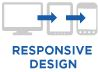

Responsive design.
Wat is het?
Responsive design is een op dit moment nog weinig gebruikte techniek, die veel potentie bied op mobiele telefoons en tablets. Responsive houd simelweg in dat de pagina zich aanpast aan zijn omgeving, en is onderdeel van WEB 2.0.
Deze website is responsive, en dat is ook de makkelijkste manier om het duidelijk te maken: maak deze browser kleiner, dan zie je dat de website mee beweegt.
- Voordelen:
- Het is makkelijk te onderhouden, omdat je geen twee websites hebt
- Het werkt op alle apparaten, en zelfs als je de browser kleinder maakt
- Nadelen:
- Het is moeilijker te ontwerpen, en moeilijker te bouwen
- Mobiele telefoons simuleren vaak verkeerde resoluties
- Er wordt data gedownload die niet op elk apparaat zichtbaar zijn
Waar moet je op letten
Mobiele telefoons hebben geen computermuis. Hierdoor werken sommige functies niet, zoals een hover. Als je met je muis over een link zweeft op sommige websites, komt er een dropdown menu naar voren. Dit kan niet op mobiele telefoons: je klikt of niet.
Afbeeldingen en teksten moeten soms worden aangepast als je scherm een bepaalde resolutie heeft, omdat de tekst anders niet meer leesbaar wordt. Als je deze pagina kleiner maakt bijvoorbeeld, dan gaan de afbeeldingen die nu rechts staan uiteindelijk onder aan de pagina staan, zodat de tekst breder kan blijven.
Mobiele telefoons hebben vaak een beperkt datagebruik, en een responsive website is vaak een stuk groter dan een mobiele website. Hierdoor gebruiken mobiele telefoons vaak meer data dan noodzakelijk, en gaat je SEO omlaag omdat de snelheid van het laden wordt vertraagt.
Wanneer responsive?
| Wanneer maak je een website responsive? |  | |
E-commerce |
*** | ** |
Snelle updates |
* | *** |
 SEO vriendelijk |
** | *** |
Korte ontwikkeltijd |
*** | ** |
Betaalbare oplossing |
** | * |
Doorstuur tracking |
* | *** |
Do it yourself |
*** | * |